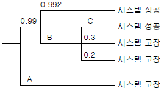
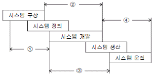
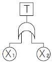
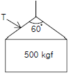
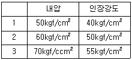
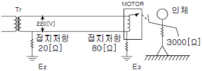
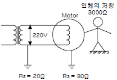
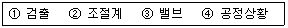

산업안전기사 (2010-03-07 기출문제)
1과목: 안전관리론
1. 연습의 방법 중 전습법(whole method)의 장점에 해당 되지 않는 것은?
- 망각이 적다.
- 연합이 생긴다.
- 길고 복잡한 학습에 적당하다.
- 학습에 필요한 반복이 적다.
(정답률: 61%)

2. 종업원 1000명이 근무하는 S 사업장의 강도율이 0.40이었다. 이 사업장에서 연간 재해발생으로 인한 근로손실일 수는 총 며칠인가?
- 480
- 720
- 960
- 1440
(정답률: 64%)
3. 다음 중 학습지도의 형태에서 몇 사람의 전문가에 의해 과정에 관한 견해를 발표하고 참가자로 하여금 의견이나 질문을 하게 하는 토의방식은?
- 포럼(Forum)
- 심포지엄(Symposium)
- 버즈세션(Buzz session)
- 자유토의법(Free Discussion Method)
(정답률: 80%)
4. 산업안전보건법상 사업내 안전보건, 교육 중 근로자 정기 안전ㆍ보건교육의 교육 내용에 해당되지 않는 것은?
- 산업보건 및 직업병 예방에 관한 사항
- 건강증진 및 질병 예방에 관한 사항
- 유해ㆍ위험 작업환경 관리에 관한 사항
- 표준안전작업방법 및 지도 요령에 관한 사항
(정답률: 73%)
5. 인간의 심리 중에는 안전수단이 생략되어 불안전 행위가 나타나는데 다음 중 안전수단이 생략되는 경우와 가장 거리가 먼 것은?
- 의식과잉이 있는 경우
- 작업규율이 엄한 경우
- 피로하거나 과로한 경우
- 조명, 소음 등 주변 환경의 영향이 있는 경우
(정답률: 80%)
6. 다음 중 적응기제(適應機制)에 있어 도피적 기제의 유형에 해당되지 않는 것은?
- 합리화
- 고립
- 퇴행
- 억압
(정답률: 78%)
7. 다음 중 허츠버그(F.Herzberg)의 위생-동기요인에 관한설명으로 틀린 것은?
- 위생요인은 매슬로우(Maslow)의 욕구 5단계이론에서 생리적ㆍ안전ㆍ사회적 욕구와 비슷하다.
- 동기요인은 맥그리거(McGrerer)의 X이론과 비슷하다.
- 위생요인은 생존, 환경 등의 인간의 동물적인 욕구를 반영하는 것이다.
- 동기요인은 성취, 인정 등의 자아실현을 하려는 인간의 독특한 경향을 반영하는 것이다.
(정답률: 71%)
8. 다음 중 헤드십(headship)의 특성에 관한 설명으로 틀린 것은?
- 상사와 부하의 사회적 간격은 넓다.
- 지휘형태는 권위주의적이다.
- 상사와 부하의 관계는 지배적이다.
- 상사의 권한 근거는 비공식적이다.
(정답률: 82%)
9. 다음 중 산업안전보건법상 중대재해(Major Accident)에 해당되지 않는 것은?
- 3개월 이상의 요양을 요하는 부상자가 동시에 2명이상 발생한 재해
- 직업성 질병자가 동시에 5명 이상 발생한 재해
- 부상자가 동시에 10명 이상 발생한 재해
- 사망자가 1명 이상 발생한 재해
(정답률: 72%)
10. 다음 중 산업안전보건법상 안전인증대상 기계⋅기구의 안전인증표시로 옳은 것은?
(정답률: 82%)
11. 하인리히의 사고예방대책 기본원리 5단계 중 제1단계에서 실시하는 내용과 가장 거리가 먼 것은?
- 안전관리규정의 작성
- 문제점의 발견
- 책임과 권한의 부여
- 안전관리조직의 편성
(정답률: 55%)
12. 다음 중 산업안전보건법상 금지표시의 종류에 해당하지 않는 것은?
- 금연
- 출입금지
- 차량통행금지
- 적재금지
(정답률: 64%)
13. 안전⋅보건교육계획을 수립할 때 계획에 포함하여야 할 사항과 가장 거리가 먼 것은?
- 교육장소와 방법
- 교육의 과목 및 교육내용
- 교육담당자 및 강사
- 교육기자재 및 평가
(정답률: 74%)
14. 다음 중 안전관리 조직의 종류와 설명이 올바르게 연결된 것은?
- Line 형 : 명령과 보고관계가 간단, 명료하다.
- Line 형 : 경영자의 조언과 자문역할을 하는 부서가 있다.
- Staff 형 : 명령계통과 조언 권고적 참여가 혼동되기 쉽다.
- Line & Staff 형 : 생산부분은 안전에 대한 책임과 권한이 없다.
(정답률: 76%)
15. 다음 중 무재해운동의 이념에서 “선취의 원칙”을 가장 적절하게 설명한 것은?
- 사고의 잠재요인을 사후에 파악하는 것
- 근로자 전원이 일체감을 조성하여 참여하는 것
- 위험요소를 사전에 발견, 파악하여 재해를 예방하거나 방지하는 것
- 관리감독자 또는 경영총회에서의 자발적 참여로 안전 활동을 촉진하는 것
(정답률: 86%)
16. 작업자가 보행 중 바닥에 미끄러지면서 상자에 머리를 부딪쳐 머리에 상해를 입었다면 이 때 기인물에 해당 하는 것은?
- 바닥
- 상자
- 전도
- 머리
(정답률: 67%)
17. 경험한 내용이나 학습된 행동을 다시 생각하여 작업에 적용하지 아니하고 방치함으로서 경험의 내용이나 인상이 약해지거나 소멸되는 현상을 무엇이라 하는가?
- 착각
- 훼손
- 망각
- 단절
(정답률: 79%)
18. 다음 중 보호구에 있어 자율안전확인 제품에 표시하여야 하는 사항이 아닌 것은?
- 제조자명
- 자율안전확인의 표시
- 사용기한
- 제조번호 및 제조연월
(정답률: 56%)
19. 다음 중 재해사례연구의 순서를 올바르게 나열한 것은?
- 재해상황 파악 → 문제점 발견 → 사실 확인 → 근본 문제점 결정 → 대책 수립
- 문제점 발견 → 재해상황 파악 → 사실 확인 → 근본 문제점 결정 → 대책 수립
- 재해상황 파악 → 사실 확인 → 문제점 발견 → 근본 문제점 결정 → 대책 수립
- 문제점 발견 → 재해상황 파악 → 대책 수립 → 근본 문제점 결정 → 사실 확인
(정답률: 62%)
20. 다음 중 브레인스토밍(Brain-storming) 기법에 관한 설명으로 틀린 것은?
- 무엇이든지 좋으니 많이 발언한다.
- 타인의 의견을 수정하여 발언한다.
- 누구든 자유롭게 발언하도록 한다.
- 제시된 의견에 대하여 문제점을 제시한다.
(정답률: 81%)
2과목: 인간공학 및 시스템안전공학
21. 다음 중 불(Bool) 대수의 정리를 나타낸 관계식으로 틀린 것은?
- A+1=A
- A+A'=1
- A+AB=A
- A+A=A
(정답률: 49%)
22. 다음 중 인간 전달 함수(Human Transfer Function)의 결점이 아닌 것은?
- 입력의 협소성
- 불충분한 직무 묘사
- 시점적 제약성
- 정신운동의 묘사성
(정답률: 59%)
23. 다음 중 시각적 표시장치보다 청각적 표시장치를 사용 하여야 할 경우는?
- 메시지가 복잡한 경우
- 메시지의 내용이 긴 경우
- 직무상 수신자가 한 곳에 머무르는 경우
- 메시지가 즉각적인 행동이 요구되는 경우
(정답률: 78%)
24. 다음은 사건수분석 (Event Tree Analysis ETA)의 작성사례 이다. A, B, C 에 들어갈 확률값들이 올바르게 나열된 것은?

- A : 0.01 B : 0.008 C : 0.03
- A : 0.008 B : 0.01 C : 0.2
- A : 0.01 B : 0.008 C : 0.5
- A : 0.3 B : 0.01 C : 0.008
(정답률: 63%)
25. 프레스 작업 중에 금형 내에 손이 오랫동안 남아 있어 발생한 재해의 경우 다음의 휴먼 에러 중 어느 것에 해당하는가?
- 시간 오류(timing error)
- 작위 오류(commission error)
- 순서 오류(sequent error)
- 생략 오류(omission error)
(정답률: 68%)
26. 다음 중 인간이 현존하는 기계를 능가하는 기능이 아닌 것은?
- 원칙을 적용하여 다양한 문제를 해결한다.
- 관찰을 통해서 일반화하고 연역적으로 추리한다.
- 주위의 이상하거나 예기치 못한 사건들을 감지한다.
- 어떤 운용방법이 실패할 경우 다른 방법을 선택한다.
(정답률: 54%)
27. n개의 요소를 가진 병렬 시스템에 있어 요소의 수명(MTTF)이 지수 분포를 따를 경우 이 시스템의 수명을 구하는 식으로 옳은 것은?
- MTFF×n
- MTFF×1/n
- MTFF(1+1/2+....+1/n)
- MTFF(1×1/2×....×1/n)
(정답률: 73%)
28. 인간공학의 연구에서 기준 척도의 신뢰성(Reliability of criterion measure)이란 무엇을 의미하는가?
- 반복성
- 적절성
- 적응성
- 보편성
(정답률: 52%)
29. 작업이나 운동이 격렬해져서 근육에 생성되는 젖산의 제거속도가 생성속도에 미치지 못하면, 활동이 끝난 후에도 남아있는 젖산을 제거하기 위하여 산소가 더 필요하게 되는데 이를 무엇이라 하는가?
- 호기산소
- 혐기산소
- 산소잉여
- 산소부채
(정답률: 63%)
30. 광원 혹은 반사광이 시계 내에 있으면 성가신 느낌과 불편감을 주어 시성능을 저하시킨다. 이러한 광원으로부터의 직사휘광을 처리하는 방법으로 틀린 것은?
- 광원을 시선에서 멀리 위치시킨다.
- 차양(visor) 혹은 갓(hood) 등을 사용한다.
- 광원의 휘도를 줄이고 광원의 수를 늘린다.
- 휘광원의 주위를 밝게 하여 광속발산(휘도)비를 늘린다.
(정답률: 53%)
31. 시스템 분석 및 설계에 있어서 인간공학의 가치와 거리가 먼 것은?
- 성능의 향상
- 사용자의 수용도 향상
- 작업 숙련도의 감소
- 사고 및 오용으로부터의 손실 감소
(정답률: 76%)
32. 다음 중 시스템 안전 프로그램 계획(SSPP)에 포함되어야 할 사항으로 적절하지 않은 것은?
- 안전자료의 수집과 갱신
- 시스템 안전의 기준 및 해석
- 위험요인에 대한 구체적인 개선 대책
- 경과와 결과의 보고
(정답률: 32%)
33. 결함수분석법에서 특정 조합의 기본사상들이 모두 결함으로 발생하였을 때 시스템의 고장사상을 일으키는 기본사상의 집합을 무엇이라 하는가?
- Cut sets
- Path sets
- Minimal cut set
- Minimal path sets
(정답률: 58%)
34. 안전성 평가의 단계를 6단계로 구분하였을 때 이에 해당하지 않는 것은?
- 안전대책
- 경제성 평가
- 관계 자료의 정비
- FTA에 의한 재평가
(정답률: 66%)
35. 다음 [그림]에서 시스템 위험분석 기법 중 PHA 가 실행되는 사이클의 영역으로 옳은 것은?

- ①
- ②
- ③
- ④
(정답률: 73%)
36. 다음 FT도에서 시스템에 고장이 발생할 확률은 약 얼마인가? (단, X1과 X2의 발생확률은 각각 0.⑤, 0.03 이다.)

- 0.0015
- 0.0785
- 0.9215
- 0.9985
(정답률: 60%)
37. 다음 중 동작 경제 원칙의 구성이 아닌 것은?
- 신체사용에 관한 원칙
- 작업장 배치에 관한 원칙
- 사용자 요구 조건에 관한 원칙
- 공구 및 설비 디자인에 관한 원칙
(정답률: 59%)
38. 다음 중 시각심리에서 형태 식별의 논리적 배경을 정리한 게슈탈트(Gestalt)의 4법칙에 해당하지 않은 것은?
- 보편성
- 접근성
- 폐쇄성
- 연속성
(정답률: 27%)
39. 인간이 절대 식별할 수 있는 대안의 최대 범위는 대략 7 이라고 한다. 이를 정보량의 단위인 bit 로 표시하면 약 몇 bit 가 되는가?
- 3.2
- 3.0
- 2.8
- 2.6
(정답률: 54%)
40. 다음 중 실내 면(面)의 추천 반사율이 가장 높은 것은?
- 벽
- 천정
- 가구
- 바닥
(정답률: 66%)
3과목: 기계위험방지기술
41. 그림과 같이 500kgf의 중량물을 와이어로프 상부 60°의 각으로 들어 올릴 때 로프 한 선에 걸리는 하중(T)는?

- 168.49kgf
- 248.58kgf
- 288.68kgf
- 378.79kgf
(정답률: 59%)
42. 목재가공용 둥근톱 작업에서 분할날과 톱날 원주면과의 간격은 얼마이내가 되도록 조정하는가?
- 10mm
- 12mm
- 14mm
- 16mm
(정답률: 69%)
43. 양중기에 사용하는 와이어로프에서 한 꼬임(스트랜드)에서 끊어진 소선의 수가 몇 퍼센트 이상일 경우 사용하지 말아야 하는가?
- 5%
- 10%
- 15%
- 20%
(정답률: 76%)
44. 기계의 각 작동 부분 상호간을 전기적, 기구적, 유공압 장치 등으로 연결해서 기계의 각 작동 부분이 정상으로 작동하기 위한 조건이 만족 되지 않을 경우 자동적으로 그 기계를 작동할 수 없도록 하는 것은?
- 인터록기구
- 과부하방지장치
- 트립기구
- 오버런기구
(정답률: 73%)
45. 기계설비의 안전조건 중 외형의 안전화에 해당하는 것은?
- 강도의 열화를 고려하여 안전율을 최대로 고려하여 설계하였다.
- 작업자가 접촉할 우려가 있는 기계의 회전부를 덮개를 씌우고 안전색채를 사용하였다.
- 기계의 안전기능을 기계설비에 내장하였다.
- 페일 세이프 및 풀 푸르프의 기능을 가지는 장치를 적용하였다.
(정답률: 76%)
46. 크레인에서 권과방지장치의 달기구 윗면이 권상장치의 아랫면과 접촉할 우려가 있는 경우에는 몇 cm 이상 간격이 되도록 조정하여야 하는가? (단, 작동식 권과방지장치의 경우는 제외한다.)
- 25
- 30
- 35
- 40
(정답률: 48%)
47. 아세틸렌 용접장치에서 사용하는 발생기실의 구조에 대한 요구사항으로 틀린 것은?
- 벽의 재료는 불연성의 재료를 사용할 것
- 천정과 벽은 견고한 콘크리트 구조로 할 것
- 출입구의 문은 두께 1.5mm 이상의 철판 그 밖에 이와 동등 이상의 강도를 가진 구조로 할 것
- 바닥 면적의 16분의 1 이상의 단면적을 가진 배기 등을 옥상으로 돌출시킬 것
(정답률: 63%)
48. 보일러 장애 및 사고원인에 관한 설명으로서 옳지 않은 것은?
- 수면계의 고장은 과열의 원인이 된다.
- 부적당한 급수처리는 부식의 원인이 된다.
- 안전밸브 작동불량은 압력상승의 원인이 된다.
- 방호장치의 작동불량은 최고사용압력 이하에서 파열의 원인이 된다.
(정답률: 66%)
49. 너트의 풀림 방지용으로 사용되는 것으로 가장 거리가 먼 것은?
- 로크너트(lock nut)
- 평와셔
- 분할핀
- 멈춤나사(set screw)
(정답률: 57%)
50. 다음과 같은 조건에서 원통용기를 제작했을 때 안전성(안전도)이 높은 것부터 순서대로 나열된 것은?

- 1 - 2 - 3
- 2 - 3 - 1
- 3 - 1 - 2
- 2 - 1 - 3
(정답률: 52%)
51. 선반 작업 시 지켜야 할 안전 수칙으로 거리가 먼 것은?
- 가공물의 설치는 반드시 스위치를 끄고 바이트를 충분히 뗀 다음에 한다.
- 상의의 옷자락은 안으로 넣고, 끈을 이용하여 소맷자락을 묶어 작업을 준비한다.
- 공작물의 설치가 끝나면, 척, 렌치류는 곧 떼어 놓는다.
- 편심된 가공물의 설치시는 균형추를 부착시킨다.
(정답률: 65%)
52. 프레스기의 안전대책 중 손을 금형 사이에 집어넣을 필요가 없도록 하는 본질적 안전화를 위한 방식(no-hand in die)에 해당하는 것은?
- 방호울식
- 수인식
- 손쳐내기식
- 광전자식
(정답률: 56%)
53. 산업용 로봇의 작업 시작 전 점검 사항이 아닌 것은?
- 외부전선의 피복 손상유무
- 압력방출장치의 이상유무
- 매니퓰레이터 작동 이상유무
- 제동장치 및 비상정지장치의 기능
(정답률: 70%)
54. 선반용 칩브레이커(chip breaker)의 종류에 속하지 않는 것은?
- 클램프형
- 연삭형
- 자동조정식
- 쐐기형
(정답률: 49%)
55. 목재가공용 둥근톱 작업에서 반발 예방장치가 아닌 것은?
- 반발방지기구(finger)
- 반발방지롤(roll)
- 분할 날(spreader)
- 립소(rip saws)
(정답률: 66%)
56. 아세틸렌 충전작업 중 고려해야 할 안전사항으로 틀린 것은?
- 충전은 서서히 하며, 여러 회로 나누지 않고 1회에 끝내야 한다.
- 충전 중의 압력은 온도에 관계없이 25kgf/cm2 이하로 한다.
- 충전 후의 압력은 15℃에서 15.5kgf/cm2 이하로 한다.
- 충전 후 24시간동안 정치한다.
(정답률: 54%)
57. 가스집합 용접장치의 배관 시 준수해야할 사항으로 틀린 것은?
- 플랜지, 밸브, 콕 등의 접합부에는 개스킷을 사용할 것
- 접합부는 상호 밀착 시키는 등의 조치를 취할 것
- 안전기를 설치할 경우 하나의 취관에 1개 이상의 안전기를 설치할 것
- 주관 및 분기관에 안전기를 설치할 것
(정답률: 57%)
58. 기계 부품에 작용하는 힘 중 안전율을 가장 크게 취하여야 할 힘의 종류는?
- 교번하중
- 반복하중
- 정하중
- 충격하중
(정답률: 69%)
59. 공작기계의 절삭 작업 시 안전대책으로 잘못된 것은?
- 바이트는 되도록 짧게 장치한다.
- 절삭중인 제품의 가공상태를 확인하기 위해 회전하고 있는 물체를 수시로 측정한다.
- 작업 중 절삭칩이 눈에 들어가지 않도록 보호안경을 착용한다.
- 절삭칩의 제거 시 브러쉬를 사용한다.
(정답률: 74%)
60. 비파괴 검사 방법이 아닌 것은?
- 음향 탐상 시험
- 초음파 탐상 시험
- 와류 탐상 시험
- 인장 시험
(정답률: 78%)
4과목: 전기위험방지기술
61. 전기설비의 방폭 개념이 아닌 것은?
- 점화원의 방폭적 격리
- 전기설비의 안전도 증강
- 점화능력의 본질적 억제
- 전기설비 주위 공기의 절연능력 향상
(정답률: 68%)
62. 충전전로의 사용전압이 22.9kV 인 경우 근로자의 신체와 충전전로의 접근 한계거리는 몇 [cm] 이상 인가?
- 90
- 110
- 130
- 150
(정답률: 48%)
63. 다음 중 전압을 구분한 것으로 알맞은 것은?(2021년 개정된 KEC 규정 적용됨)
- 저압이란 교류 600V 이하, 직류는 교류의 √2 배 이하인 전압을 말한다.
- 고압이란 교류 7000V 이하, 직류 7500V 이하를 말한다.
- 특고압이란 교류, 직류 모두 7000V를 초과하는 것을 말한다.
- 고압이란 교류, 직류 모두 7500V를 넘지 않는 것을 말한다.
(정답률: 68%)
64. 인체의 피부 전기저항은 여러 가지의 제반조건에 의해서 변화를 일으키는데 제반조건으로써 가장 가까운 것은?
- 피부의 청결
- 피부의 노화
- 인가전압의 크기
- 통전경로
(정답률: 54%)
65. 교류아크 용접기에 전격 방지기를 설치하는 요령 중 틀린 것은?
- 직각으로만 부착해야 한다.
- 이완 방지 조치를 한다.
- 동작 상태를 알기 쉬운 곳에 설치한다.
- 테스트 스위치는 조작이 용이한 곳에 위치시킨다.
(정답률: 73%)
66. 방폭구조의 종류 중 본질안전 방폭구조의 기호는?
- ia
- d
- e
- p
(정답률: 65%)
67. 전선로를 정전시키고 보수작업을 할 때 유도전압이나 오통전으로 인한 재해를 방지하기 위한 안전조치는?
- 보호구를 착용한다.
- 단락접지를 시행한다.
- 방호구를 사용한다.
- 검전지로 확인한다.
(정답률: 65%)
68. Polyester, Nylon, Acryl 등의 섬유에 정전기 대전방지 성능이 특히 효과가 있고 섬유에의 균일 부착성과 열 안전성이 양호한 외부용 일시성 대전방지제는?
- 양ion계
- 음ion계
- 비ion계
- 양성ion계
(정답률: 68%)
69. 그림과 같은 설비에 누전되었을 때 인체가 접촉 하여도 안전하도록 ELB를 설치하려고 한다. 가장 적당한 ELB 정격은?

- 30mA, 0.1초
- 60mA, 0.1초
- 90mA, 0.1초
- 120mA, 0.1초
(정답률: 61%)
70. 정전기 발생에 영향을 주는 요인에 대한 설명으로 옳지 않은 것은?
- 접촉면적이 크고 접촉압력이 높을수록 발생량이 많아 진다.
- 물체 표면이 수분이나 기름으로 오염되면 발생량이 많아진다.
- 물체의 분리속도가 빠를수록 완화시간이 길어져서 발생량은 많아진다,
- 정전기의 발생은 처음 접촉, 분리 할 때가 최대로 되고 접촉, 분리가 반복됨에 따라 발생량은 감소한다.
(정답률: 49%)
71. 각종 물질을 마찰할 때 대전의 정(+), 부(-)이온을 조사하여 나타낸 대전서열을 중 가장 높은 정(+)으로 대전하는 물질은?
- 머리카락
- 유리
- 고무
- 염화비닐
(정답률: 42%)
72. 전격의 위험을 결정하는 주된 인자 중 거리가 가장 먼 사항은?
- 통전전압의 크기
- 통전전류의 크기
- 통전경로
- 통전시간
(정답률: 67%)
73. 정전기 방전의 종류에 속하지 않는 것은?
- 스트리머방전
- 코로나방전
- 연면방전
- 적외선방전
(정답률: 64%)
74. 과전류에 의한 전선의 인화로부터 용단에 이르기 까지 각 단계별 기준으로 옳지 않은 것은? (단, 전선전류 밀도는 A/mm2이다.)
- 인화단계 : 40 ~ 43 A/mm2
- 착화단계 : 43 ~ 60 A/mm2
- 발화단계 : 60 ~ 150 A/mm2
- 용단단계 : 120 A/mm2 이상
(정답률: 67%)
75. 접지 목적에 따른 접지종류와 접지공사법 모두 맞는 것은?
- 계통접지 - 고압전로와 저압전로가 혼촉되는 특별한 경우의 감전이나 화재방지, 제1종 접지공사
- 기기접지 - 누전되고 있는 기기에 접촉되었을 때의 감전방지, 제2종 접지공사
- 피뢰기 접지 - 낙뇌로부터 전기 기기의 손상을 방지, 10Ω 이하인 특별 3종 접지공사
- 등전위 접지 - 병원에 있어서 의료기기 사용 시의 안전을 꾀하기 위함, 0.1Ω 이하 접지공사
(정답률: 50%)
76. 온도 t[℃]에서 동선의 저항을 Rt, 온도계수 at 일 때 T[℃]에 있어서의 저항 Rt 는 어떻게 구해지는가?
- Rt{1+at(T-t)}
- Rt{at+234.5)t-T)}
- at{1+Rt(T-t)}
- Rt{1+at(T+t)}
(정답률: 44%)
77. 피뢰기의 접지저항은 몇 [Ω] 이하로 하여야 하는가?
- 10Ω 이하
- 100Ω 이하
- 106 Ω 이하
- 1kΩ 이하
(정답률: 71%)
78. 반도체 취급시에 정전기로 인한 재해 방지 대책으로 거리가 먼 것은?
- 송풍형 제전기 설치
- 부도체의 접지 실시
- 작업자의 대전방지 작업복 착용
- 작업대에 정전기 매트 사용
(정답률: 61%)
79. 그림과 같은 전기설비에서 누전사고가 발생하였을 때 인체가 전기설비의 외함에 접촉하였을 때 인체통과 전류는 약 몇[mA] 인가?

- 40
- 51
- 58
- 60
(정답률: 48%)
80. 폭발성 가스 중 폭발등급이 1등급인 가스는?
- 에틸렌
- 수소
- 아세틸렌
- 일산화탄소
(정답률: 34%)
5과목: 화학설비위험방지기술
81. 산업안전보건법에 따라 사업주가 특수화학설비를 설치하는 때에 그 내부의 이상상태를 조기에 파악하기 위하여 설치하여야 하는 장치는?
- 자동경보장치
- 안전감시장치
- 자동문개폐장치
- 스크러버개방장치
(정답률: 66%)
82. 다음 중 산업안전보건법상 위험물의 종류에서 인화성 물질에 해당하지 않는 것은?
- 인화점이 섭씨 23도 미만인 가솔린
- 인화점이 섭씨 23도 이상 60도 이하인 등유
- 인화점이 섭씨 23도 이상 60도 이하인 크실렌
- 인화점이 섭씨 영하 15도 이상 0도 미만인 아세톤
(정답률: 52%)
83. 다음 중 화학공장에서 주로 사용되는 불활성 가스는?
- 수소
- 수증기
- 질소
- 일산화탄소
(정답률: 69%)
84. 다음 중 불활성화(퍼지)에 관한 설명으로 틀린 것은?
- 압력퍼지가 진공퍼지에 비해 퍼지시간이 길다.
- 진공퍼지는 압력퍼지보다 인너트 가스 소모가 적다.
- 사이펀 퍼지가스의 부피는 용기의 부피와 같다.
- 스위프 퍼지는 용기나 장치에 압력을 가하거나 진공으로 할 수 없을 때 사용된다.
(정답률: 54%)
85. 다음 중 CO2 약제의 장점으로 볼 수 없는 것은?
- 기체 팽창률 및 기화 잠열이 작다.
- 액화 용이한 불연속성 가스이다.
- 전기의 부도체로서 C급 화재에 적응성이 있다.
- 자체 증기압이 높으며 화재 심부까지 침투가 용이하다.
(정답률: 51%)
86. 다음 중 석유화재의 거동에 관한 설명으로 틀린 것은?
- 액면상의 연소 확대에 있어서 액온이 인화점보다 높을 경우 예혼합형 전파연소를 나타낸다.
- 액면상의 연소 확대에 있어서 액온이 인화점보다 낮을 경우 예열형 전파연소를 나타낸다.
- 저장조 용기의 직경이 1m 이상에서 액면강하속도는 용기 직경에 관계없이 일정하다.
- 저장조 용기의 직경이 1m 이상이면 층류화염형태를 나타낸다.
(정답률: 41%)
87. 프로판(C3H8) 가스가 공기 중 연소할 때의 화학양론 농도는 약 얼마인가? (단, 공기 중의 산소농도는 21vol% 이다.)
- 2.5vol%
- 4.0vol%
- 5.6vol%
- 9.5vol%
(정답률: 52%)
88. 산업안전보건법상 유해인자의 분류기준에서 화학물질의 분류 중 인화성액체의 정의로 옳은 것은?
- 표준압력에서 인화점이 30℃ 이하인 액체
- 표준압력에서 인화점이 40℃ 이하인 액체
- 표준압력에서 인화점이 50℃ 이하인 액체
- 표준압력에서 인화점이 60℃ 이하인 액체
(정답률: 41%)
89. 다음 [보기]에서 일반적인 자동제어 시스템의 작동순서를 바르게 나열한 것은?

- ① → ② → ④ → ③
- ④ → ① → ② → ③
- ② → ④ → ① → ③
- ③ → ② → ④ → ①
(정답률: 68%)
90. 다음 중 수분(H2O)과 반응하여 유독성 가스인 포스핀이 발생되는 물질은?
- 금속나트륨
- 알루미늄 분말
- 인화칼슘
- 수소화리튬
(정답률: 54%)
91. 다음 관(pipe) 부속품 중 관로의 방향을 변경하기 위하여 사용하는 부속품은?
- 플랜지(flange)
- 유니온(union)
- 니플(nipple)
- 엘보우(elbow)
(정답률: 76%)
92. 다음 중 폭발원인물질의 물리적 상태에 따라 구분할 때 기상 폭발에 해당되지 않는 것은?
- 가스 폭발
- 분진 폭발
- 분무 폭발
- 응상 폭발
(정답률: 68%)
93. 8vol% 헥산, 3vol% 메탄, 1vol% 에틸렌으로 구성된 혼합가스의 연소하한값(LFL)은 약 얼마인가? (단, 각 물질의 공기 중 연소하한값은 헥산은 1.1vol%, 메탄은 5.0vol%, 에틸렌은 2.7vol% 이다.)
- 2.45
- 1.95
- 0.69
- 1.45
(정답률: 46%)
94. 다량의 황산이 가연물과 혼합되어 화재가 발생하였을 경우의 소화작업으로 적절하지 못한 방법은?
- 회(灰)로 덮어 질식소화를 한다.
- 건조분말로 질식소화를 한다.
- 마른 모래로 덮어 질식소화를 한다.
- 물을 뿌려 냉각소화 및 질식소화를 한다.
(정답률: 76%)
95. 인화성 가스 및 증기의 위험도에 따른 방폭전기기기의 분류로 폭발등급을 사용하고 있다. 이 폭발등급을 결정하는 것은?
- 발화도
- 화염일주한계
- 최소발화에너지
- 폭발한계
(정답률: 66%)
96. 위험물질을 산업안전보건법에서 정한 기준량 이상 제조, 취급, 사용 또는 저장하는 설비로서 특수화학설비에 해당되는 설비는?
- 폭발위험이 있는 위험물을 증류에 의해 분리를 행하는 장치
- 상온에서 게이지 압력으로 7kgf/cm2의 압력으로 운전 되는 설비
- 대기압 하에서 섭씨 300℃로 운전되는 설비
- 흡열반응이 행하여지는 반응설비
(정답률: 52%)
97. 처음 온도가 20℃ 인 공기를 절대압력 1기압에서 3기압으로 단열압축하면 최종온도는 약 몇 도인가? (단, 공기의 비열비 1.4 이다.)
- 68℃
- 75℃
- 128℃
- 164℃
(정답률: 48%)
98. 인화성가스가 발생할 우려가 있는 지하 작업장에서 작업시 폭발 또는 화재를 예방하기 위한 조치사항으로 틀린 것은?
- 매일 작업하기 전에 가스의 농도를 측정한다.
- 해당 가스에 대한 이상을 발견할 때 가스의 농도를 측정한다.
- 장시간 작업시 6시간마다 가스의 농도를 측정한다.
- 가스 농도가 폭발하한계의 25% 이상일 경우 안전한 장소로 대피시킨다.
(정답률: 67%)
99. 다음 중 공업용 고압가스 용기의 도색방법으로 틀린 것은?
- 산소 - 녹색
- 액화암모니아 - 백색
- 아세틸렌 - 황색
- 액화염소 - 주황색
(정답률: 63%)
100. 산업안전기준에 관한 규칙상 건조설비를 사용하여 작업을 하는 경우 폭발 또는 화재를 예방하기 위하여 준수하여야 하는 사항으로 적절하지 않은 것은?
- 위험물 건조설비를 사용하는 때에는 미리 내부를 청소하거나 환기할 것
- 위험물 건조설비를 사용하는 때에는 건조로 인하여 발생하는 가스ㆍ증기 또는 분진에 의하여 폭발ㆍ화재의 위험이 있는 물질을 안전한 장소로 배출시킬 것
- 위험물 건조설비를 사용하여 가열건조하는 건조물은 쉽게 이탈되도록 할 것
- 고온으로 가열건조한 인화성 물질은 발화의 위험이 없는 온도로 냉각한 후에 격납시킬 것
(정답률: 75%)
6과목: 건설안전기술
101. 건물외부에 낙하물 방지망을 설치할 경우 수평면과의 가장 적절한 각도는?
- 5° ~ 10°
- 10° ~ 15°
- 15° ~ 25°
- 20° ~ 30°
(정답률: 61%)
102. 건립 중 강풍에 의한 풍압 등 외압에 대한 내력이 설계에 고려되었는지 확인하여야 하는 철골구조물에 해당하지 않는 것은?(관련 규정 개정전 문제로 여기서는 기존 정답인 2번을 누르면 정답 처리됩니다. 자세한 내용은 해설을 참고하세요.)
- 이음부가 현장용접인 건물
- 높이 15m 인 건물
- 기둥이 타이플레이트(tie plate)형인 구조물
- 구조물의 폭과 높이의 비가 1:5 인 건물
(정답률: 68%)
103. 작업발판의 설치 기준으로 옳지 않은 것은?
- 작업발판의 폭은 40cm 이상으로 하고 발판재료 간의 틈은 3cm 이하로 한다.
- 작업발판의 설치가 필요한 비계의 높이는 최소 2m 이상으로 한다.
- 작업발판이 뒤집히거나 떨어지지 아니하도록 3 이상의 지지물에 연결하거나 고정한다.
- 추락의 위험성이 있는 장소에는 안전난간을 설치 할 것
(정답률: 61%)
104. 항타기 또는 항발기의 권상용 와이어로프의 절단하중이 100ton 일 때 와이어로프에 걸리는 최대하중을 얼마까지 할 수 있는가?
- 20ton
- 33.3ton
- 40ton
- 50ton
(정답률: 56%)
1⑤. 터널붕괴를 방지하기 위한 지보공 점검사항과 가장 거리가 먼 것은?
- 부재의 긴압의 정도
- 부재의 손상ㆍ변형ㆍ부식ㆍ변위 탈락의 유무 및 상태
- 기둥침하의 유무 및 상태
- 터널 거푸집 지보공의 수량 상태
(정답률: 65%)
106. 이동식비계 조립 및 사용 시 준수사항이 아닌 것은?
- 비계의 최상부에서 작업을 할 때에는 안전난간을 설치하여야 한다.
- 승강용사다리는 견고하게 설치되어야 한다.
- 이동시 작업지휘자는 방향과 높이 측정을 위해 비계 위에 탑승해야 한다.
- 작업중 갑작스러운 이동을 방지하기 위해 바퀴는 브레이크 등으로 고정시켜야 한다.
(정답률: 76%)
107. 로드(rod)⋅유압잭(jack) 등을 이용하여 거푸집을 연속적으로 이동시키면서 콘크리트를 타설할 때 사용되는 것으로 silo 공사 등에 적합한 거푸집은?
- 메탈폼
- 슬라이딩폼
- 워플폼
- 페코빔
(정답률: 73%)
108. 다음 중 양중기에 사용되는 와이어로프의 사용금지 규정으로 옳지 않은 것은?
- 이음매가 있는 것
- 와이어로프의 한 꼬임에서 끊어진 소선의 수가 10% 이상인 것
- 심하게 변형 또는 부식된 것
- 지름의 감소가 공칭지름의 5% 이상인 것
(정답률: 70%)
109. 토사붕괴의 발생을 예방하기 위한 조치사항으로 옳지않은 것은?
- 적절한 경사면의 기울기 계획
- 절토 및 성토 높이의 증가
- 활동할 가능성이 있는 토석 제거
- 말뚝(강관, H형강, 철근콘크리트) 을 타입하여 지반 강화
(정답률: 63%)
110. 옥외에 설치되어 있는 주행 크레인은 순간풍속이 얼마 이상일 때 이탈방지장치를 작동시키는 등 이탈을 방지하기 위한 조치를 해야 하는가?
- 순간풍속이 매 초당 5m 초과시
- 순간풍속이 매 초당 10m 초과시
- 순간풍속이 매 초당 20m 초과시
- 순간풍속이 매 초당 30m 초과시
(정답률: 53%)
111. 잠함 또는 우물통의 내부에서 굴착작업을 할 때의 준수사항으로 옳지 않은 것은?
- 굴착깊이가 10m를 초과하는 때에는 해당 작업장소와 외부와의 연락을 위한 통신설비 등을 설치한다.
- 산소결핍의 우려가 있는 때에는 산소의 농도를 측정하는 자를 지명하여 측정하도록 한다.
- 근로자가 안전하게 승강하기 위한 설비를 설치한다.
- 측정결과 산소의 결핍이 인정될 때에는 송기를 위한 설비를 설치하여 필요한 양의 공기를 공급하여야 한다.
(정답률: 61%)
112. 굴착작업시 준수사항으로 옳지 않은 것은?
- 작업 전에 산소농도를 측정하고 산소량은 18% 이상 이어야 하며, 발파 후 반드시 환기설비를 작동시켜 가스배출을 한 후 작업을 하여야 한다.
- 시트파일의 설치시 수직도는 1/100 이내 이어야 한다.
- 토압이 커서 링이 변형될 우려가 있는 경우 스트러트 등으로 보강하여야 한다.
- 굴착 및 링의 설치와 동시에 철사다리를 설치 연장하여야 하는데 철사다리는 굴착 바닥면과 2m 이내가 되게 한다.
(정답률: 44%)
113. 사업주는 리프트를 조립 또는 해체작업할 때 작업을 지휘하는 자를 선임하여야 한다. 이때 작업을 지휘하는 자가 이행하여야 할 사항으로 거리가 먼 것은?
- 작업방법과 근로자의 배치를 결정하고 해당 작업을 지휘하는 일
- 재료의 결함유무 또는 기구 및 공구의 기능을 점검하고 불량품을 제거하는 일
- 운전방법 또는 고장났을 때의 처치방법 등을 근로자에게 주지시키는 일
- 작업 중 안전대 등 보호구의 착용상황을 감시하는 일
(정답률: 47%)
114. 공사용 가설도로에 대한 설명 중 옳지 않은 것은?
- 도로는 장비 및 차량이 안전하게 운행할 수 있도록 견고하게 설치한다.
- 도로는 배수에 상관없이 평탄하게 설치한다.
- 도로와 작업장이 접하여 있을 경우에는 방책 등을 설치한다.
- 차량의 속도제한 표지를 부착한다.
(정답률: 72%)
115. 차량계 건설기계의 전도방지 조치에 해당되지 않는 것은?
- 운행 경로 변경
- 갓길의 붕괴방지
- 지반의 부동침하방지
- 도로 폭의 유지
(정답률: 58%)
116. 물체가 떨어지거나 날아올 위험이 있을 때의 재해예방 대책과 거리가 먼 것은?
- 낙하물방지망 설치
- 출입금지구역 설정
- 안전대 착용
- 안전모 착용
(정답률: 70%)
117. 다음 중 철근인력운반에 대한 설명으로 옳지 않은 것은?
- 긴 철근은 두 사람이 한 조가 되어 어깨메기로 운반하는 것이 좋다.
- 운반할 때에는 중앙부를 묶어 운반한다.
- 운반시 1인당 무게는 25kg 정도가 적당하다.
- 긴 철근을 한 사람이 운반할 때는 한쪽을 어깨에 메고 한쪽 끝을 땅에 끌면서 운반한다.
(정답률: 63%)
118. 굴착작업에서 지반의 붕괴 또는 매설물, 그 밖에 지하 공작물의 손괴 등에 의하여 근로자에게 위험을 미칠 우려가 있을 때 작업장소 및 그 주변에 대한 사전 지반조사사항으로 가장 거리가 먼 것은?
- 형상⋅지질 및 지층의 상태
- 매설물 등의 유무 또는 상태
- 지표수의 흐름 상태
- 균열⋅함수⋅용수 및 동결의 유무 또는 상태
(정답률: 61%)
119. 산업안전 보건관리비계상 기준으로 일반건설공사(갑) “5억원 이상 ~ 50억원 미만” 의 비율 및 기초액으로 옳은 것은?
- 비율 : 1.86%, 기초액 : 5,349,000원
- 비율 : 1.95%, 기초액 : 3,498,000원
- 비율 : 2.15%, 기초액 : 5,148,000원
- 비율 : 1.49%, 기초액 : 4,211,000원
(정답률: 64%)
120. 강풍 시 타워크레인의 작업제한과 관련된 사항으로 타워크레인의 운전작업을 중지해야 하는 순간풍속기준으로 옳은 것은?(관련 규정 개정전 문제로 여기서는 기존 정답인 2번을 누르면 정답 처리됩니다. 자세한 내용은 해설을 참고하세요.)
- 순간풍속이 매 초당 10 미터 초과
- 순간풍속이 매 초당 20 미터 초과
- 순간풍속이 매 초당 30 미터 초과
- 순간풍속이 매 초당 40 미터 초과
(정답률: 64%)
전습법은 학습할 내용을 전체적으로 파악하고 한 번에 실행하는 방법이다. 이에 따라 망각이 적고 연합이 생기는 장점이 있지만, 길고 복잡한 학습에는 적합하지 않다. 이유는 전체적으로 파악하고 실행하는 것이 어렵기 때문에 세부적인 부분을 반복적으로 학습해야 하기 때문이다. 따라서 학습에 필요한 반복이 적다는 장점은 해당되지 않는다.